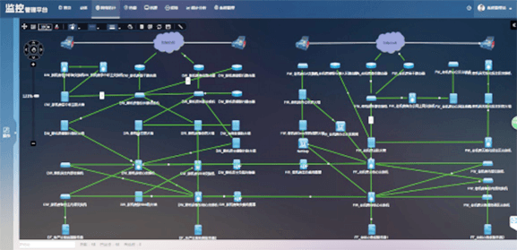
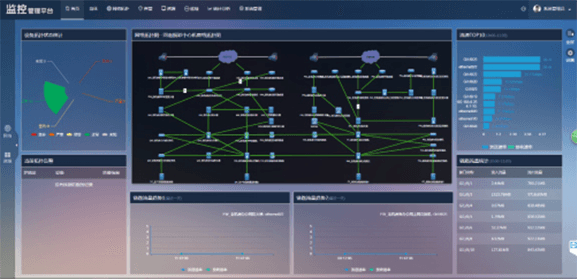

河南福彩中心

案例介绍
河南福利彩票发行中心的主要工作就是对双色球、3D福彩、七乐彩等福利彩票的玩法定时的发布中奖公告、彩票玩法、福彩新闻等信息，所以相关的福彩网的稳定性和与其它福彩中心网络连接的实时性就是福彩中心的重中之重。所以用户面临如下的问题：
※ 几百台的网络设备，有不同的连接属性，如果实时获知每条链路的状态。
※ 福彩网的信息更新要及时，内容的展示要求做到7X24小时。 本次福彩运维中心的建立，主要是全网的拓扑发现和相关的资源的秒级监控。系统通过自动拓扑发现功能，实现了对200多台不同类型不同厂商的网络设备的发现功能。建立真实可信的二层物理网络拓扑图；网络拓扑结构的显示可以按照用户的爱好自行拖曳编排，从而以最直观的方式展示实际的网络结构。可在拓扑图上直观呈现网络设备运行状况、链路属性、链路带宽及当前的流量；可通过鼠标点击显示的提示信息查看网络设备和链路的基本信息，如网络设备的当前运行状态、链接接口状态和出入流速等；系统能够对整个区域分层次管理，可以将整个管理区域分为若干管理子图，支持不同管理权限的管理人员管理不同的拓扑区域。
※ 几百台的网络设备，有不同的连接属性，如果实时获知每条链路的状态。
※ 福彩网的信息更新要及时，内容的展示要求做到7X24小时。 本次福彩运维中心的建立，主要是全网的拓扑发现和相关的资源的秒级监控。系统通过自动拓扑发现功能，实现了对200多台不同类型不同厂商的网络设备的发现功能。建立真实可信的二层物理网络拓扑图；网络拓扑结构的显示可以按照用户的爱好自行拖曳编排，从而以最直观的方式展示实际的网络结构。可在拓扑图上直观呈现网络设备运行状况、链路属性、链路带宽及当前的流量；可通过鼠标点击显示的提示信息查看网络设备和链路的基本信息，如网络设备的当前运行状态、链接接口状态和出入流速等；系统能够对整个区域分层次管理，可以将整个管理区域分为若干管理子图，支持不同管理权限的管理人员管理不同的拓扑区域。

在一个运维平台可实现对网络，主机，业务系统，事件上报、事件处理、事件跟踪进行统一监控、统一管理，降低对IT管理的运行成本。通过自定义首页功能，可以将网络拓扑、流量、链路、告警等用户关注的信息，在同一个页面显示，方便运维人员快速锁定异常设备的所在，并根据相关的关联指标进行分析，找出问题的根源所在。
